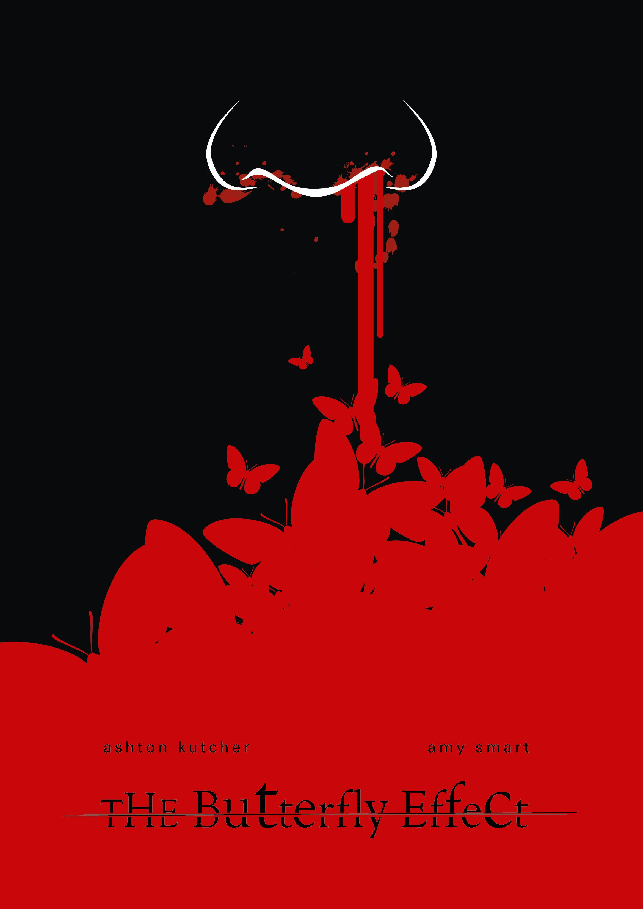
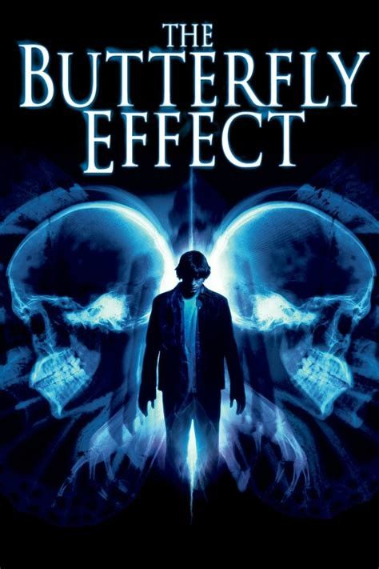

1.Introduction:
One of the best movies i have watched, very simple movie which is based on the concept of butterfly effect.The butterfly effect is the idea that small things can have non-linear impacts on a complex system.The concept is imagined with a butterfly flapping its wings and causing a typhoon. To put in simple words, the movie explores the idea of how impactful or significant each every event in your life can be and how even a small silly event in our life can change our life drastically. I always thought changing a single event in life can't change our entire entire life but this movie proved me wrong.....
In addition to how impactful an event in our life can be, the movie also explores how impactful every single person in our life is. It explores how these people impact the decision we take in life and also how these people might even change our life totally. Not even one decision in our life we take selfishly, we as humans always undertake a decision only if it has no negative effect at all on our loved ones.
2.Into the Movie:
Okay,let me jump into the movie. The movie revolves around 3 characters mainly, who are friends,Evan, who ocassionally blacks out during certain situations , Lenny,a pretty calm guy and Kayleigh who has an abusive father and a rogue brother(Tommy).The 3 kids have a pretty adventurous life and some unfortunate events too happen in their life. One of the unfortunate event forces Evan's mom to shift him to a new town so he grows up in a good environment surrounded by good people. Evan leaves the town promising Kayleigh he will be back.All the 3 part ways now in the movie. Evan moves to a new town and we don't know what happened to Kayleigh or Lenny or Tommy.Fast forward........ Evan is now a pscyh major and he enjoys his life and he even forgets his friends(Crazy how he forgets his friends Lol ,but literally all of us are like that XD) and the promise he made to Kayleigh. But one day he finds his old journals and things take a turn in the movie , I would suggest you to watch the movie to know what happened to Kayleigh ,Tommy and Lenny and also to know what Evan discovered reading his journal.